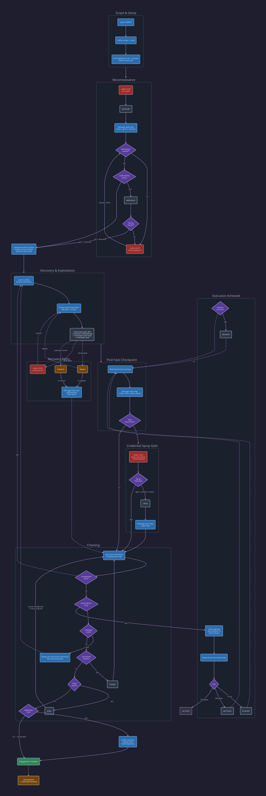

Running an Engagement
This page describes how the CTF orchestrator drives a penetration test from target to objective. The orchestrator uses Claude Code agent teams to coordinate persistent domain teammates. See Architecture for more on this separation.
Prerequisites
Launch with ./run.sh from the repo directory (ensures shell-server is running). For split-pane teammate visibility, start inside a tmux session. Teammate permission requests surface to the operator for approval in standard mode.
Starting a Test
Trigger the orchestrator with a target:
/red-run-ctf 10.10.10.5
/red-run-ctf 192.168.1.0/24
/red-run-ctf 10.10.10.5
Use the /red-run-ctf slash command followed by your target(s). Natural language triggers have been removed to reduce AUP filter sensitivity.
Scope Gathering
The orchestrator's first action is gathering scope:
- Targets — IPs, hostnames, CIDR ranges
- Credentials — any provided usernames, passwords, hashes
- Rules of engagement — what's in scope, what's off-limits
- Objectives — flags, domain admin, data exfiltration goals
Engagement Configuration
After the CTF disclaimer, the orchestrator runs a config wizard — four quick questions that capture operator preferences for the entire engagement:
- Scan type — quick (top 1000) or full (all 65535)
- Web proxy — Burp on loopback, custom proxy, no proxy, or ask later
- Spray intensity — light/medium/heavy/skip default when usernames are found
- Cracking method — local/external/skip default when hashes are captured
Every question has an "ask each time" option that preserves the old interactive behavior. Preferences are stored in engagement/config.yaml and can be edited at any time. The config file also supports callback_ip and callback_interface overrides for reverse shell callbacks (auto-detected by default).
Config values either skip hard stops entirely (scan type and web proxy use the config value without asking) or pre-select defaults in hard stops that still fire (spray and cracking still show context but the operator confirms with one keystroke).
Engagement Directory
The orchestrator creates the engagement directory structure:
engagement/
├── config.yaml # Operator preferences from config wizard
├── scope.md # Target scope and rules of engagement
├── state.db # SQLite engagement state database
├── dump-state.sh # Export state.db as markdown (operator convenience)
├── web-proxy.json # Machine-readable web proxy config
├── web-proxy.sh # Shell env vars for web proxy (sourced by agents)
└── evidence/ # Saved output and dumps
└── logs/ # Agent JSONL transcripts
It initializes state.db via init_engagement(), writes the scope to scope.md, and generates config.yaml from the wizard answers.
Engagement Workflow
The orchestrator follows this decision flow from target to objective:

Reconnaissance
After scope setup, the orchestrator runs reconnaissance.
Scan Type Selection
If config.yaml has a scan_type value, the orchestrator uses it directly — no hard stop. The operator still approves the task assignment, so they can override at that point. If scan_type is omitted (operator chose "ask each time"), the orchestrator pauses to ask.
Options: Quick (top 1000), Full (all 65535), Custom (operator-specified flags), or Import XML (existing nmap output).
The lead spawns a net-enum teammate with the network-recon skill, which runs nmap via the nmap-server MCP and enumerates discovered services.
Hostname Resolution
When nmap discovers hostnames that don't resolve from the attackbox, the orchestrator hits a hard stop:
- Writes a
hosts-update.shscript with the required/etc/hostsentries - Pauses and asks the operator to run it
- Resumes only after confirmation
This pattern repeats when web discovery finds virtual hosts that need resolution.
Web Discovery
If HTTP/HTTPS ports are found, the orchestrator resolves the web proxy decision before assigning any web teammate. If config.yaml has a web_proxy section, the orchestrator writes the persistence files (web-proxy.json, web-proxy.sh, scope.md ## Web Proxy section) automatically — no hard stop. If web_proxy is omitted from config, the orchestrator pauses to ask the operator.
If Burp proxying is enabled, web-proxy.json records the listener URL for browser-server defaults, and web-proxy.sh exports env vars for CLI tools. All subsequent web agents source web-proxy.sh and route attackbox HTTP(S) traffic through the configured proxy.
Only after that decision is resolved does the lead spawn a web-enum teammate with the web-discovery skill. Multiple web services get parallel teammates (e.g., web-enum-80, web-enum-8443). Each performs content discovery, technology fingerprinting, parameter fuzzing, and vulnerability identification.
Attack Surface Presentation
After recon, the orchestrator categorizes the attack surface:
- Web — HTTP/HTTPS services, applications, APIs
- Active Directory — Domain controllers, Kerberos, LDAP
- SMB — File shares, named pipes
- Database — MSSQL, MySQL, PostgreSQL
- Containers — Docker, Kubernetes
- Remote Access — SSH, RDP, WinRM
It presents the surface with chain analysis — how vulnerabilities might connect to achieve objectives — and the operator picks the attack path.
Skill Routing
The orchestrator needs to pick the right skill for each situation. Most of the time, skills tell it what to do next — a discovery skill's decision tree says "if you found SQLi, route to sql-injection-union", and the orchestrator looks that up in a hardcoded routing table that maps skill names to agents. But sometimes the orchestrator encounters a situation that doesn't match any hardcoded route — an unusual service, an uncommon vulnerability, a technology the decision trees don't cover. That's where RAG comes in.
What RAG means here
RAG stands for Retrieval-Augmented Generation. In red-run, it means the orchestrator can search the skill library by describing what it needs in plain English, instead of knowing the exact skill name in advance.
Here's how it works under the hood:
-
Indexing — When you run
install.sh, the indexer (tools/skill-router/indexer.py) reads everySKILL.mdfile and extracts structured YAML frontmatter: the skill's description, keywords, tool names, and OPSEC rating. It builds a text document from these fields and computes a vector embedding usingall-MiniLM-L6-v2, a sentence-transformer model that converts text into 384-dimensional vectors. These vectors are stored in ChromaDB, a local vector database attools/skill-router/.chromadb/. -
Searching — When the orchestrator calls
search_skills("AJP connector on port 8009"), the skill-router converts that query into a vector using the same model and finds the closest matches by cosine similarity. Theajp-ghostcatskill's frontmatter mentions "AJP", "port 8009", "CVE-2020-1938", and "Ghostcat" — its vector is close to the query vector, so it ranks high. Results below 0.4 similarity are filtered out automatically. -
Loading — The orchestrator reviews the search results (each includes the skill's description and OPSEC rating), picks the best match, and tells the teammate to load it via
get_skill("ajp-ghostcat"). The teammate gets the fullSKILL.mdcontent — methodology, payloads, troubleshooting — injected into its context.
The "augmented generation" part is that Claude doesn't rely on its training data to know how to exploit AJP Ghostcat. Instead, the skill's methodology is retrieved from the local library and injected into the prompt, giving the teammate precise, tested instructions rather than general knowledge.
Routing
All routing is dynamic via search_skills(). The orchestrator walks the engagement state, identifies actionable findings, and searches the skill library to find the matching technique skill. It then resolves the right teammate from the skill's category (web skills → web-ops, AD skills → ad-ops, etc.).
1. State shows unexploited vuln: "AJP connector on port 8009"
2. search_skills("AJP connector") → finds ajp-ghostcat
3. Skill category is web → assign to web-ops teammate
4. Pass: skill name, target, injection point, credentials, access context
The orchestrator validates search results before loading — a high similarity score doesn't guarantee relevance. The embedding model can confuse adjacent techniques (SSRF vs CSRF, IDOR vs ACL-abuse), so the orchestrator reads each result's description to confirm it matches the situation. If nothing fits, it proceeds with general methodology and notes the coverage gap.
Context passing
When the lead assigns a task to a teammate, it passes engagement context:
- Skill name to load via
get_skill() - Injection point details (URL, parameter, method)
- Target technology (framework, database, OS version)
- Working payloads from previous skills
- Web proxy configuration when the operator enabled capture
- Credential and access IDs for provenance tracking
Hard Stops
The orchestrator has several points where it must pause for operator input. Some are config-aware — if config.yaml provides the answer, the hard stop is skipped or pre-filled.
| Hard Stop | When | Config-aware? | Behavior with config |
|---|---|---|---|
| Scan type | Before reconnaissance | Yes — scan_type |
Skipped entirely; config value used |
| Web proxy | HTTP/HTTPS ports found | Yes — web_proxy |
Skipped entirely; persistence files written from config |
| Hostname resolution | New hostnames discovered | No | Always interactive (requires sudo) |
| Password spray | New usernames discovered | Partial — spray.default_tier |
Still fires; config pre-selects tier |
| Hash cracking | Hashes captured | Partial — cracking.default_method |
Still fires; config pre-selects method |
| Vhost resolution | Virtual hosts discovered | No | Always interactive (requires sudo) |
Hard stops prevent the orchestrator from making high-impact decisions autonomously. The config wizard captures preferences upfront so returning operators move faster, while "ask each time" options preserve the fully interactive workflow.
Chaining Logic
After each task completes, the lead runs a post-task checkpoint and decision logic using get_state_summary():
- Unexercised vulns? → Route technique skill to ops teammate
- New access (shell/login)? → Execution Achieved hard stop (see below)
- Untested credentials? → Spawn per-user credential context enum teammate + password reuse spray
- Unrecovered hashes? → Hashes Found hard stop
- Pivot paths? → Spawn pivoting teammate, then recon the new subnet
- Blocked items? → Retry with context, or move on
- Objectives met? → Post-access and wrap-up
Hard Stops
The orchestrator has mandatory pause points. Every task assignment requires operator approval — no auto-dispatch.
| Hard Stop | Trigger | Action |
|---|---|---|
| Execution Achieved | New shell or login gained | Immediate: shell upgrade → spawn host enum teammate → AD enum if domain user. Highest priority — don't wait for other tasks. |
| Vuln Confirmed | Enum teammate confirms a vuln | Enum teammate stops, writes to state-mgr, messages lead. Does NOT exercise. Lead routes to ops teammate. |
| Credential Context Enum | New credential captured | Spawn dedicated net-enum-<username> to enumerate what that identity can access: shares, services, web roles, AD context. One teammate per user. |
| Technique-Vuln Linkage | Credential from active technique | Teammate must create a vuln record for the technique before the credential. State-mgr rejects credentials without via_vuln_id when the source implies a technique. |
| Hostname Resolution | Unresolvable hostname | Operator runs hosts-update script |
| Password Spray | New usernames discovered | Operator chooses tier and services |
| Hash Recovery | Hashes captured | Operator chooses local/external/skip |
Recovery Paths
When agents hit obstacles, the orchestrator has structured recovery:
AV/EDR Blocked
When a payload is caught by antivirus:
- The ops teammate stops and returns structured AV-blocked context
- The lead spawns a
bypassteammate withav-edr-evasion - The bypass teammate builds an artifact (custom compilation, AMSI bypass, LOLBins)
- The lead re-assigns the original skill to the ops teammate with the bypass artifact
- If no bypass works, the technique is recorded as blocked and the lead moves to the next vector
Note: start_listener responses include Windows payloads with built-in AMSI bypass for CTF-level Defender evasion. The bypass teammate is only needed when default evasion fails.
Clock Skew
Kerberos authentication fails when clock skew exceeds 5 minutes:
- The orchestrator writes a
clock-sync.shscript - Pauses for the operator to sync clocks
- Re-invokes the skill after confirmation
DNS Resolution Failure
When tools fail on hostname resolution, the orchestrator follows the same hostname resolution hard stop pattern.
Monitoring During Engagement
Monitoring
Agent teams — each teammate runs in its own tmux pane. Watch all teammates working in parallel, press Escape to interrupt any teammate, type directly to redirect. Start Claude Code inside a tmux session for split-pane mode.
State dashboard — real-time web dashboard showing the access chain graph, targets, credentials, and assessment progress. Start in a separate terminal:
bash operator/state-viewer/start.sh
Teammates communicate findings directly via peer-to-peer messaging and write to state.db for durability. No event watcher needed — teammate messages are the notification channel.
See Dashboard and Monitoring for full details.
Post-Engagement
When objectives are met (or all paths exhausted), the orchestrator:
- Collects evidence — ensures all findings are in
engagement/evidence/ - Updates state — marks vulnerabilities as
done, verifies access records - Verifies objectives — confirms flags captured, access achieved
- Summarizes — produces an engagement summary with key findings
Retrospective
The retrospective skill is how red-run gets better for you over time. After an engagement, it reads through everything that happened — the activity log, engagement state, findings, and the raw JSONL transcripts from every teammate — and produces a structured analysis of what worked, what didn't, and what to fix.
It evaluates five things:
-
Skill routing — Did the orchestrator pick the right skills? Were any skills skipped that should have been used? Was anything executed inline (without loading a skill) that a skill already covers? This produces a routing ledger showing every decision and whether it was correct.
-
Knowledge gaps — For each skill that was used, did it have the right payloads? Did the target hit edge cases the skill didn't cover? Were tool commands correct or did the teammate have to improvise? Each gap becomes a specific edit to make.
-
Missing skills — Were techniques used manually that should be skills? It cross-references against the full skill inventory via
search_skills()to distinguish actual coverage gaps from routing gaps (skill exists but wasn't used). -
Operational review — Were OPSEC ratings respected? Were there unnecessary detours? Did the orchestrator chain vulnerabilities efficiently or miss shortcuts?
-
Critical path — Maps the actual kill chain and identifies bottlenecks where the engagement stalled.
The output is engagement/retrospective.md with a priority-ordered list of actionable items: skill updates, new skills to write, routing fixes, and template changes. After you review and pick which items to prioritize, the retrospective skill makes the edits directly — updating skill files, creating new skills from the template, fixing routing tables — and re-indexes the skill library so changes take effect immediately.
This is the feedback loop that makes the skill library adapt to your targets and methodology. Skills ship as baseline templates; retrospectives refine them based on what you actually encounter.